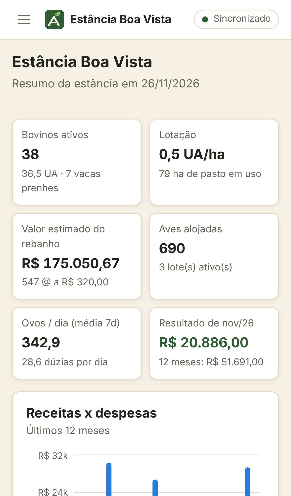
As telas deste manual mostram a estância de demonstração que acompanha o app. Os nomes, números e animais são fictícios.
A Fazenda Ativa controla o gado, as galinhas, a sanidade, os pastos, o estoque e o dinheiro da estância em um só lugar, no computador ou no celular, com ou sem internet.
Este manual segue a ordem do menu lateral. Cada capítulo explica para que serve a tela, como fazer as tarefas mais comuns e o que o app calcula sozinho. No fim estão as referências de cálculo, uma rotina sugerida e as dúvidas frequentes.
| Área do menu | Telas | Para que serve |
|---|---|---|
| Painel | Painel | Visão geral do dia: números principais, alertas e tarefas |
| Bovinos | Rebanho, Pesagens, Reprodução, Leite | Cadastro de cada animal pelo brinco, peso, ciclo reprodutivo e ordenha |
| Aves | Lotes de aves, Produção diária | Lotes de postura e corte, ovos, mortalidade e ração |
| Manejo | Sanidade, Pastagens, Estoque | Vacinas e remédios, piquetes e lotação, insumos |
| Gestão | Financeiro, Agenda, Equipe, Configurações | Receitas e despesas, tarefas, funcionários, contas de acesso e backup |
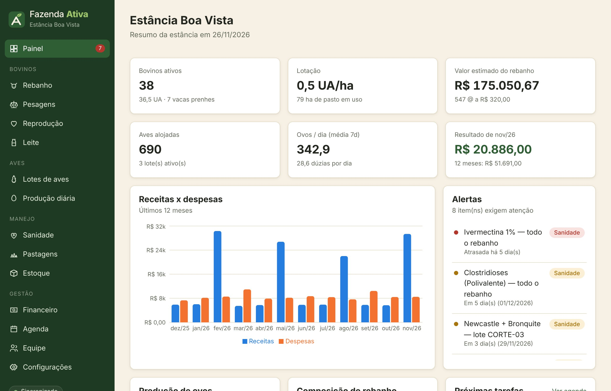
No primeiro acesso, a pessoa responsável cria a estância usando o código de cadastro e vira a administradora.
Depois desse cadastro, a tela inicial passa a mostrar só o login. Ninguém mais consegue criar outra estância.
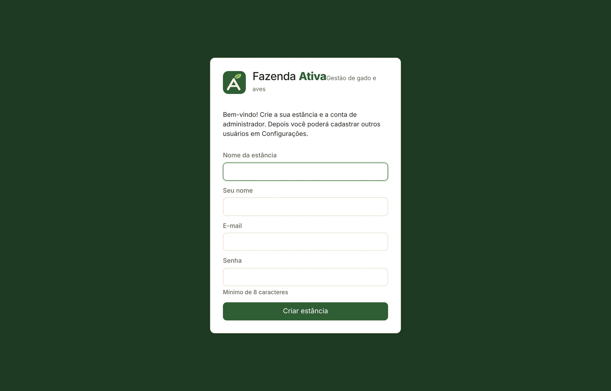
No Android, o Chrome oferece Instalar app no menu de três pontos. No computador, basta deixar o site salvo nos favoritos.
| Papel | Pode fazer |
|---|---|
| Administrador | Tudo, inclusive criar e desativar usuários, importar backup, restaurar registros pela Lixeira, carregar demonstração e apagar todos os dados |
| Membro | Registrar e consultar tudo: animais, pesagens, aves, sanidade, estoque, financeiro, agenda |
O app funciona igual com ou sem internet: tudo o que você lança é gravado primeiro no aparelho e enviado ao servidor assim que houver sinal.
O lançamento nunca espera a internet: ele fica no aparelho e sobe na próxima sincronização. O app sincroniza sozinho ao abrir, quando a internet volta, a cada 30 segundos e logo depois de cada alteração.
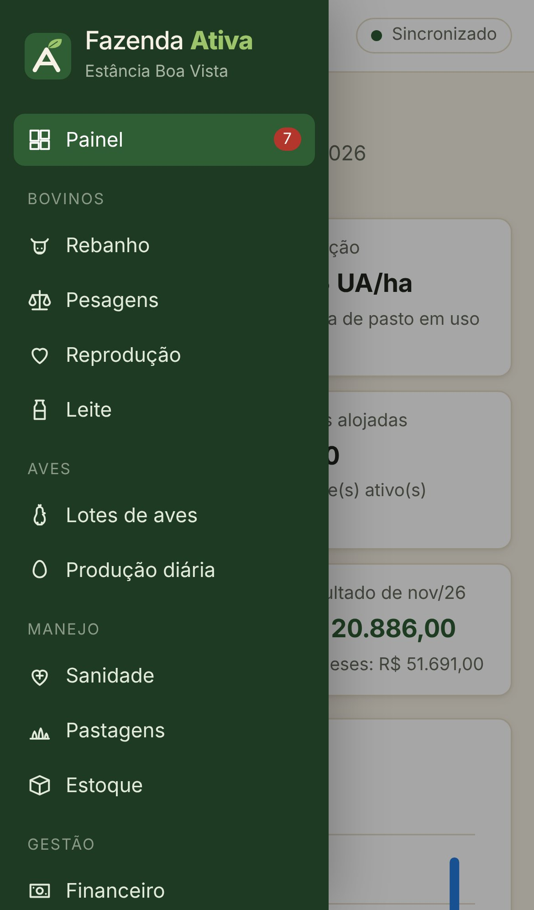
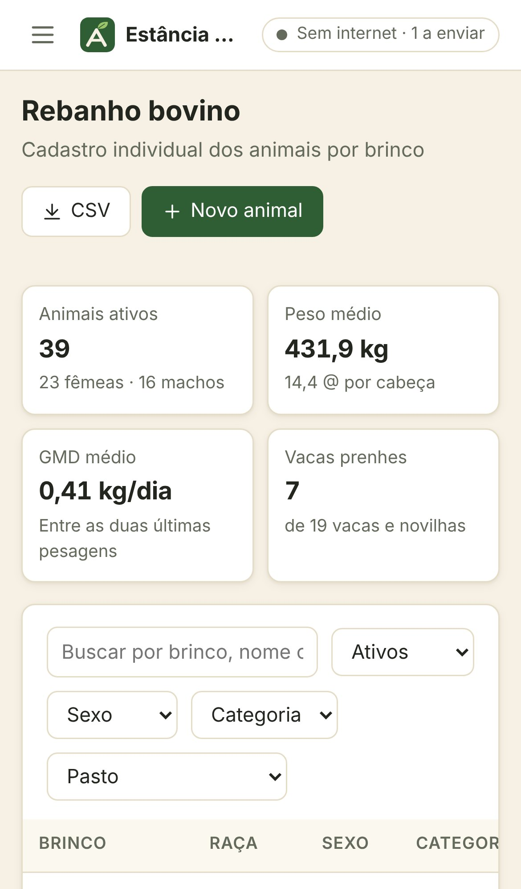
Fica no rodapé do menu (computador) ou no topo da tela (celular). Toque nele para sincronizar na hora.
| Indicador | Significado | O que fazer |
|---|---|---|
| Sincronizado | Tudo enviado e recebido | Nada |
| N a enviar | Há alterações esperando para subir | Normal logo após lançar. Some em segundos com internet |
| Sincronizando… | Conversando com o servidor | Aguarde |
| Sem internet · N a enviar | Aparelho offline, alterações guardadas | Continue usando. Sobe sozinho quando o sinal voltar |
| Erro ao sincronizar | O servidor recusou ou falhou | Toque para tentar de novo. Se continuar, avise o administrador |
| Sessão expirada | O login venceu | Entre de novo. Nada do que está na fila se perde |
O Painel é a primeira tela e mostra, num relance, como está a estância hoje e o que precisa de atenção. Nada é digitado aqui: tudo vem das outras telas.
| Indicador | O que mostra | De onde vem |
|---|---|---|
| Bovinos ativos | Cabeças no rebanho, total em UA e vacas prenhes | Rebanho, pesagens e reprodução |
| Lotação | UA por hectare nos pastos marcados como "em uso" | Pesos atuais ÷ área dos pastos em uso |
| Valor estimado do rebanho | Arrobas estimadas × preço da arroba | Peso atual de cada animal e o preço em Configurações |
| Aves alojadas | Aves vivas nos lotes ativos | Quantidade alojada menos as mortes registradas |
| Ovos / dia | Média dos últimos 7 dias e dúzias por dia | Produção diária das aves |
| Resultado do mês | Receitas menos despesas do mês e dos últimos 12 meses | Financeiro |
A lista de alertas junta tudo o que precisa de ação. Toque num alerta para ir direto à tela certa. O número vermelho ao lado de Painel no menu conta os alertas críticos e de atenção.
| Cor | Significado | Exemplos |
|---|---|---|
| Crítico | Atrasado ou grave | Dose de vacina vencida, item de estoque zerado, mortalidade alta num lote de aves |
| Atenção | Vence em até 7 dias ou já passou do prazo | Vacina na semana, estoque abaixo do mínimo, tarefa atrasada, conta vencida |
| Informação | Próximo, sem urgência | Vacina em 8 a 15 dias, parto em até 30 dias, lote sem registro recente |
Cada bovino é cadastrado individualmente pelo número do brinco. A partir dele o app acompanha idade, categoria, peso, reprodução e sanidade.
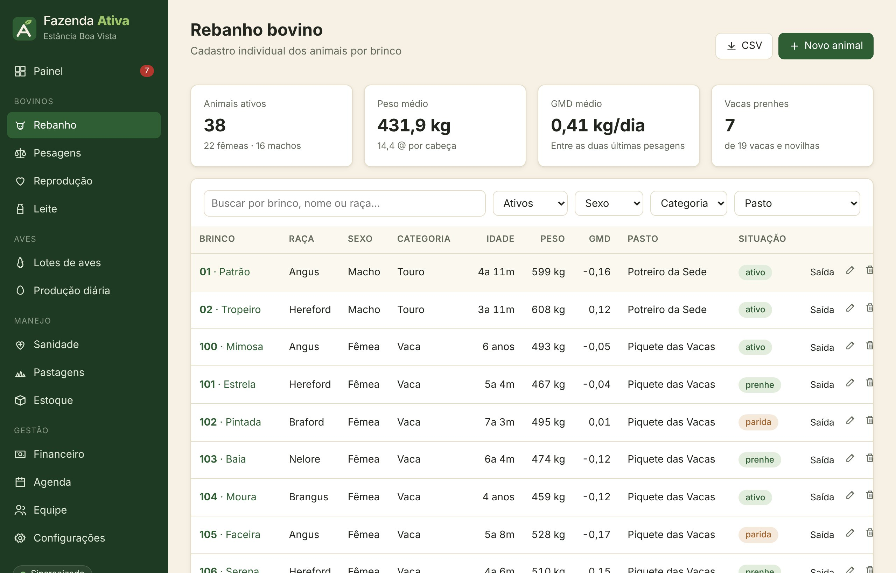
Toque em Bovinos › Rebanho › + Novo animal e preencha os campos:
| Campo | Como usar |
|---|---|
| Brinco / identificação | Obrigatório. Não pode repetir entre animais ativos |
| Nome | Opcional, comum para vacas e touros |
| Sexo, raça, nascimento | Definem a categoria e a idade. A raça pode ser digitada ou escolhida na lista |
| Finalidade | Corte, leite ou reprodução. Um macho adulto de reprodução aparece como touro; de corte, como boi |
| Origem | Nascido na estância ou comprado |
| Pasto / piquete | Onde o animal está. Alimenta a lotação de cada pasto |
| Mãe e pai | Genealogia. A mãe é escolhida entre as fêmeas cadastradas |
| Peso atual (kg) | Opcional. Se informado, já cria a primeira pesagem com a data de hoje |
A categoria (bezerro, bezerra, garrote, novilha, vaca, boi, touro) é calculada pelo app e muda sozinha conforme o animal envelhece ou pare.
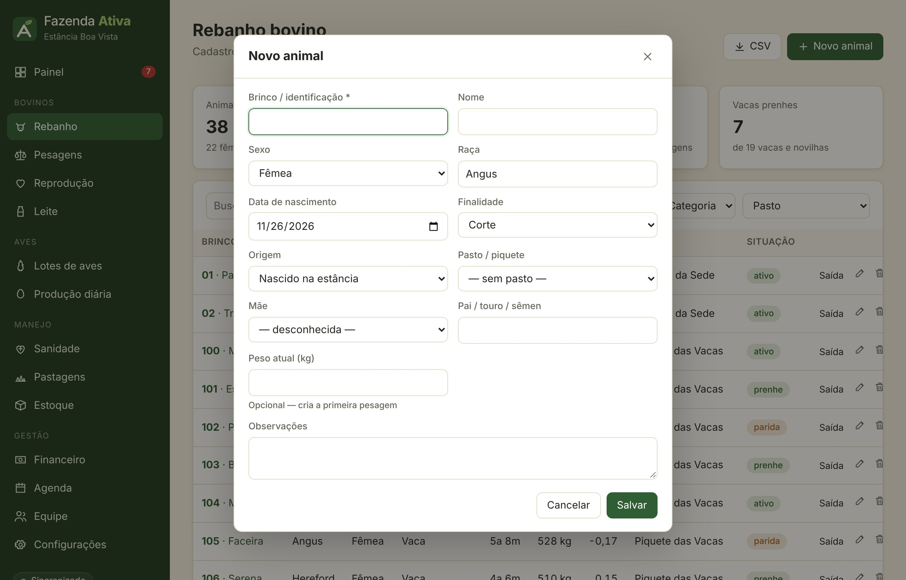
Use a busca (brinco, nome ou raça) e os filtros de situação, sexo, categoria e pasto. O botão CSV baixa a lista filtrada para abrir no Excel. A coluna Situação mostra se a fêmea está vazia, coberta, prenhe ou parida.
Toque no brinco para abrir a ficha. Ela mostra idade, peso atual em kg, arrobas e valor estimado, GMD recente e pasto; o gráfico da evolução de peso; mãe, pai e crias; as pesagens; os manejos sanitários, com aviso vermelho se o animal estiver em carência; e, nas fêmeas, o histórico reprodutivo. Os botões Editar e Registrar saída ficam no topo.
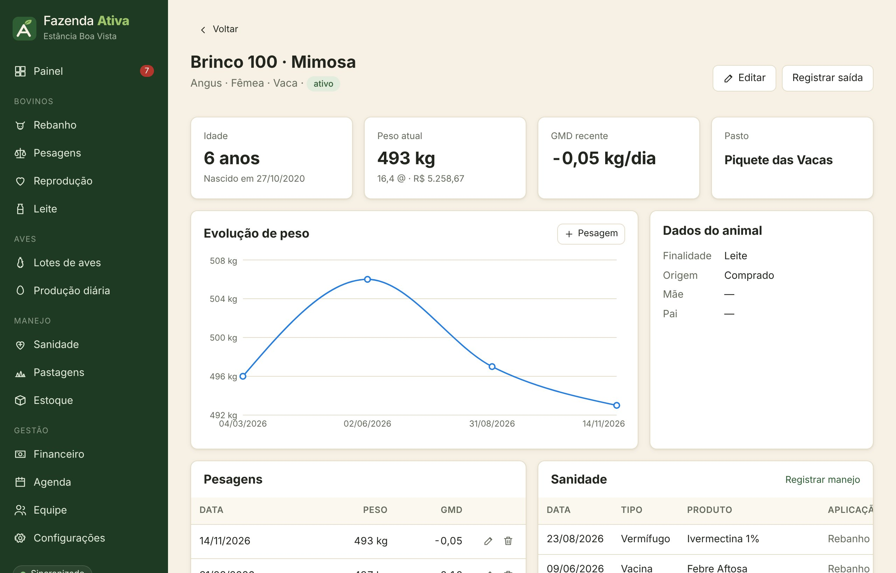
As pesagens dão o peso atual de cada animal e, a partir da segunda, o ganho médio diário (GMD). Delas saem as arrobas, o valor do rebanho e a lotação dos pastos.
Bovinos › Pesagens › + Nova pesagem, ou + Pesagem na ficha do animal. Escolha o animal, a data e o peso em kg.
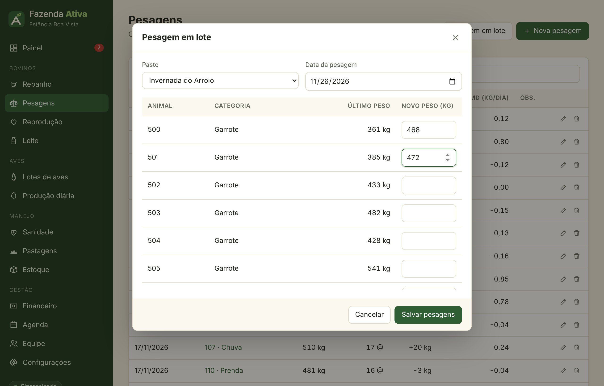
| Coluna | Significado |
|---|---|
| Peso | Peso vivo em kg |
| Arrobas | Estimativa de arrobas de carcaça (peso ÷ 30) |
| Ganho | Diferença em kg para a pesagem anterior do mesmo animal |
| GMD (kg/dia) | Ganho ÷ dias entre as duas pesagens |
A tela de Reprodução acompanha cada vaca e novilha pelo ciclo cobertura → diagnóstico → parto e calcula a data prevista do parto (283 dias depois da cobertura ou inseminação).
Na aba Matrizes, toque em Registrar na linha da fêmea: o app já sugere o próximo passo (diagnóstico para uma coberta, parto para uma prenhe). Também dá para usar + Novo evento ou + Evento na ficha do animal.
| Evento | O que informar | O que muda |
|---|---|---|
| Cobertura | Data e touro | Situação vira coberta e o parto previsto aparece |
| Inseminação | Data e sêmen ou touro | Igual à cobertura |
| Diagnóstico | Data e resultado (prenhe ou vazia) | prenhe mantém o parto previsto; vazia apaga a previsão |
| Parto | Data. Pode cadastrar o bezerro na hora (brinco e sexo) | Situação vira parida. O bezerro entra no rebanho com mãe, pai, raça e pasto preenchidos |
| Aborto | Data | Situação volta para vazia |
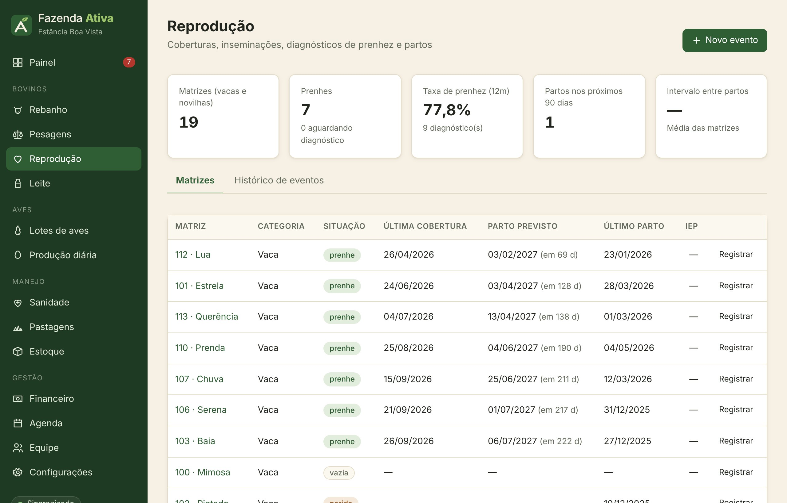
A aba Histórico de eventos lista tudo o que foi registrado, do mais novo ao mais antigo, para editar ou corrigir.
Bovinos › Leite › Registrar ordenha: data, litros do dia e quantas vacas foram ordenhadas. A tela mostra a média diária dos últimos 7 dias, litros por vaca por dia, total do mês e o gráfico dos últimos 60 dias. A venda do leite é lançada no Financeiro, na categoria Venda de leite.
As galinhas são controladas por lote (um grupo alojado junto, no mesmo galpão). O registro diário de ovos, mortes e ração alimenta todos os índices do lote.
Aves › Lotes de aves › + Novo lote.
| Campo | Como usar |
|---|---|
| Código | Nome curto do lote, por exemplo POST-01 |
| Finalidade | Postura (ovos), corte (frango) ou matrizes |
| Raça / linhagem, galpão | Para identificar e filtrar |
| Alojamento e idade | Data de alojamento e idade das aves naquele dia. O app soma os dias e mostra a idade em semanas |
| Quantidade de aves | Aves alojadas. As mortes registradas são descontadas daqui |
| Situação | Ativo ou encerrado (lote vendido ou descartado). Encerrados somem das listas, mas ficam no histórico |
Se o número de ovos passar do número de aves vivas, o app pede confirmação, porque provavelmente é erro de digitação. A tela também mostra os totais dos últimos 7 dias, a receita potencial pelo preço da dúzia e um resumo por dia.
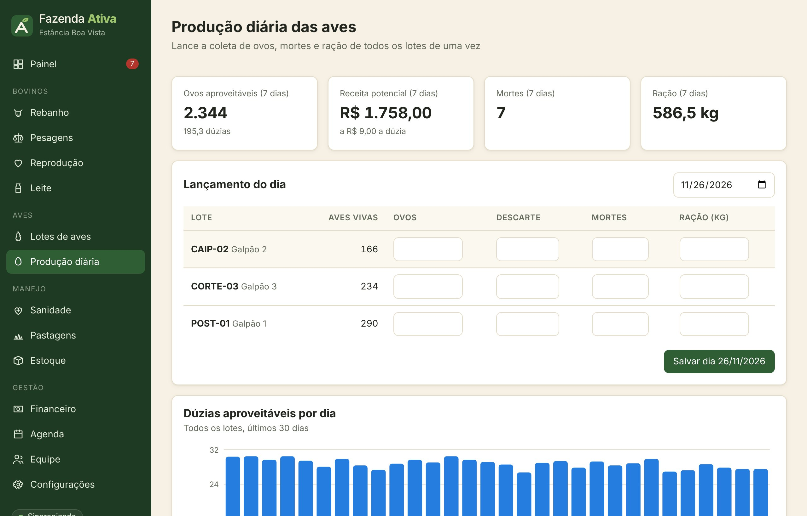
Toque no código do lote para abrir a ficha.
| Lote de postura | Lote de corte |
|---|---|
| Taxa de postura dos últimos 7 dias e gráfico diário | Peso médio das amostragens e gráfico |
| Ovos produzidos e valor estimado | Conversão alimentar (kg de ração por kg de peso vivo) |
| Ração gasta por dúzia de ovos | Ração consumida no total |
Nos dois tipos aparecem aves vivas, idade, mortalidade acumulada (em vermelho acima de 5%), os registros diários para corrigir e os manejos sanitários do lote. Nos lotes de corte, informe o peso médio (g) de uma amostra de aves uma vez por semana, pelo botão Registro diário da ficha.
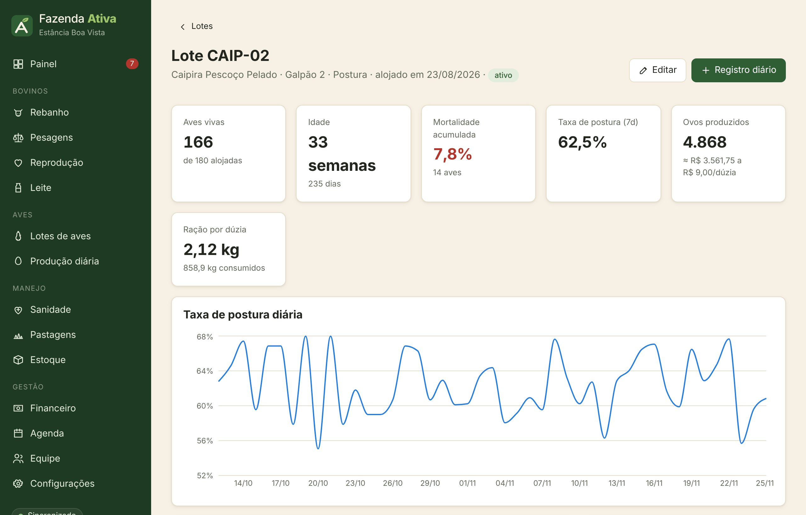
A Sanidade guarda cada vacina, vermífugo, medicamento e exame, avisa quando vence a próxima dose e mostra quem está em período de carência.
Manejo › Sanidade › + Novo manejo.
| Campo | Como usar |
|---|---|
| Espécie | Bovinos ou aves |
| Aplicação | Todo o rebanho (ou todas as aves), um animal pelo brinco ou um lote de aves |
| Tipo e produto | Vacina, vermífugo, medicamento, exame ou outro, e o nome do produto |
| Dose / via | Texto livre, por exemplo "2 ml subcutâneo" |
| Data da aplicação | Quando foi aplicado |
| Próxima dose | Gera o lembrete no Painel. Use os atalhos Repetir em 30, 90, 180 ou 365 dias |
| Carência (dias) | Dias em que carne, leite ou ovos não podem ser vendidos |
| Responsável, observações | Quem aplicou e qualquer detalhe |
A aba Próximas doses lista o que está programado, do mais urgente ao mais distante, com o prazo em dias. Quando aplicar, toque em Aplicar na linha: o formulário abre preenchido com o mesmo produto e alvo e a data de hoje. Basta informar a próxima dose e salvar.
O app considera só a aplicação mais recente de cada produto para cada alvo. Ao registrar a nova dose, o lembrete antigo some sozinho.
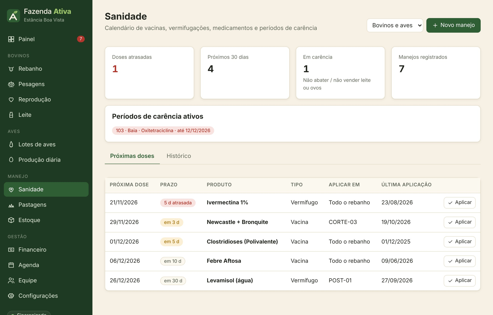
Todo manejo com carência aparece no quadro Períodos de carência ativos até a data final, e a ficha do animal ganha um aviso vermelho.
A aba Histórico traz todos os manejos com produto, dose, alvo, carência e responsável. Use o filtro do topo para ver só bovinos ou só aves.
Cada piquete, potreiro ou invernada é cadastrado com nome, área em hectares, forrageira e situação (em uso, descanso ou reforma). O app soma os animais de cada pasto e calcula a lotação.
| Coluna | Significado |
|---|---|
| Cabeças | Animais ativos com aquele pasto no cadastro |
| UA | Peso atual somado ÷ 450 kg |
| Lotação | UA ÷ área (UA/ha) |
| Ocupação | Barra comparando a lotação com 2 UA/ha: amarela acima de 80% e vermelha acima de 100% |
Um pasto em descanso ou reforma que ainda tenha animais ganha o aviso com animais. Para fazer o rodízio, edite o animal no Rebanho e troque o pasto. O indicador Animais sem pasto mostra quem ficou sem pasto definido.
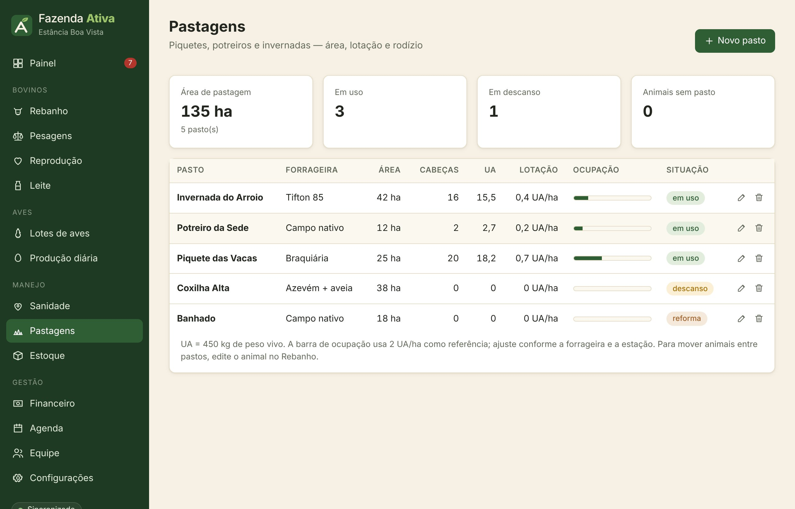
O Estoque controla ração, sal mineral, vacinas, medicamentos, combustível e ferramentas, com saldo, estoque mínimo e custo.
Quando o saldo chega ao mínimo, o item ganha a etiqueta repor e um alerta aparece no Painel. A aba Movimentações mostra todas as entradas e saídas. Excluir uma movimentação desfaz o efeito dela no saldo.
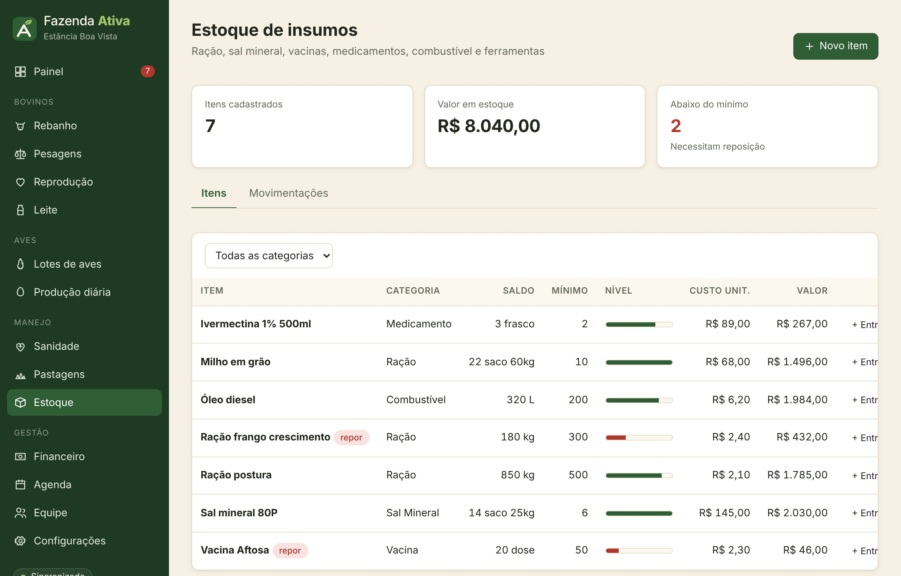
O Financeiro registra receitas e despesas separadas por atividade (bovinos, aves ou geral) e mostra o resultado de cada uma, além das contas a pagar e a receber.
Use + Receita ou + Despesa e preencha categoria, atividade, valor, descrição e data (ou vencimento). Deixe Já pago / Já recebido desmarcado para contas futuras: elas entram como pendentes.
Alguns lançamentos são criados sozinhos por outras telas:
| Ação | Lançamento criado |
|---|---|
| Saída de animal por venda, com valor | Receita "Venda de gado" (bovinos) |
| Entrada no estoque com "Lançar despesa" marcado | Despesa da categoria do item (Ração, Sanidade, Combustível...) |
| Equipe › Lançar folha no financeiro | Despesa "Mão de obra" com a soma dos salários, pendente |
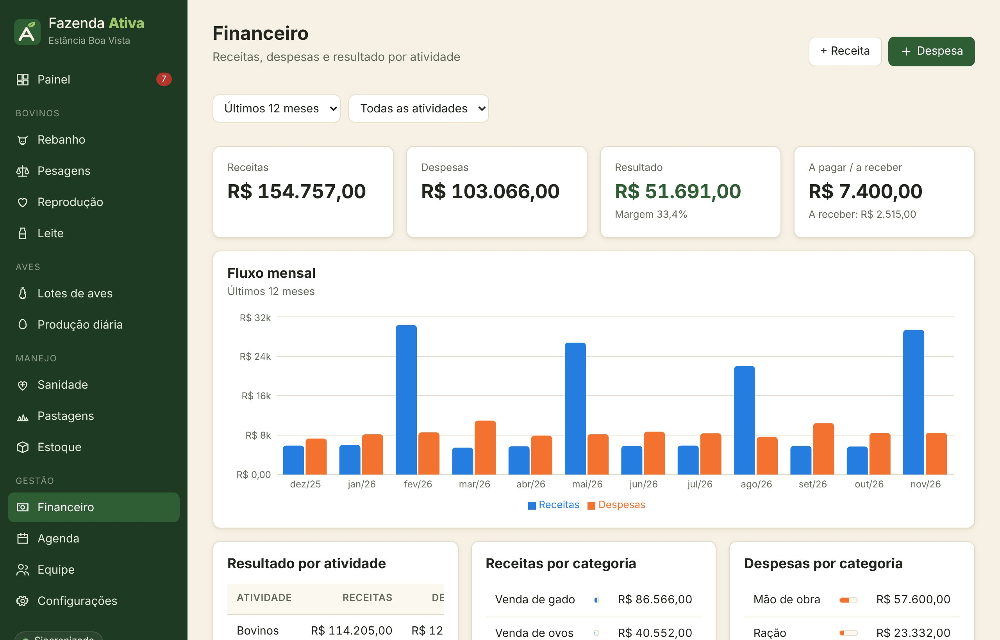
Na tabela de lançamentos, a situação aparece como pago / recebido, pendente ou vencido. Toque na etiqueta para marcar como pago. Despesas vencidas geram um alerta no Painel. Marque Só pendentes para ver apenas o que falta acertar.
A Agenda guarda as tarefas da estância: consertos, rodízio de pasto, compras, vacinações combinadas.
Tarefas atrasadas e do dia aparecem nos alertas do Painel, e as seis próximas ficam no quadro Próximas tarefas.
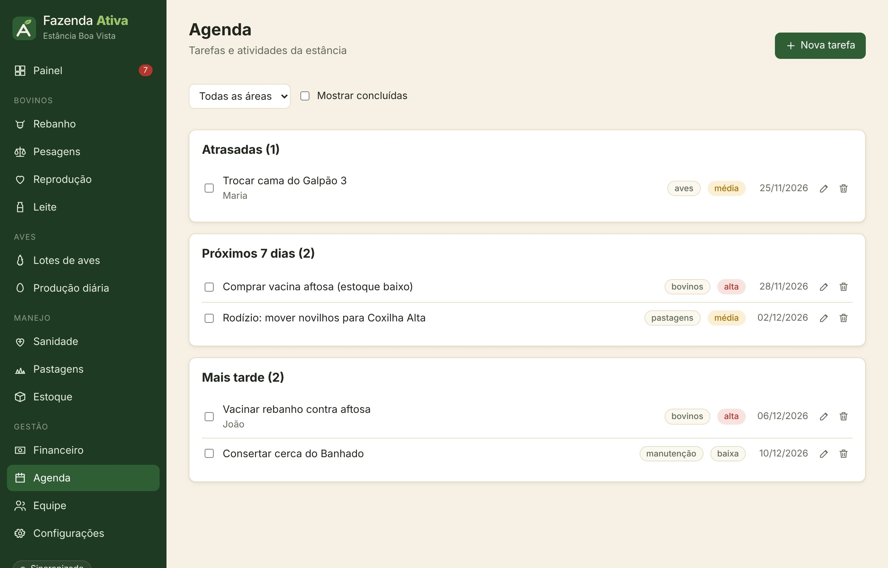
A Equipe é o cadastro de funcionários e peões: nome, função, telefone, admissão, salário e se está ativo. O botão Lançar folha no financeiro cria uma despesa pendente com a soma dos salários dos ativos.
Em Configurações ficam os dados da estância, os preços usados nos cálculos, a sua conta, os usuários e o backup.
| Quadro | O que faz | Quem vê |
|---|---|---|
| Estância | Nome, proprietário, município, área total, preço da arroba e preço da dúzia de ovos. Os preços alimentam o valor do rebanho e a receita estimada dos ovos | Todos |
| Conta e sincronização | Seu nome e papel, situação da sincronização, Sincronizar agora, Trocar senha e Sair | Todos |
| Backup dos dados | Baixar backup (.json) salva uma cópia completa num arquivo | Todos |
| Importar backup | Substitui todos os dados da estância pelos do arquivo, para todos os usuários | Administrador |
| Dados de demonstração | Carregar demonstração troca tudo por uma estância fictícia. Começar do zero apaga tudo. Valem para todos os usuários | Administrador |
| Usuários | Criar usuário, trocar o papel, definir nova senha, desativar ou reativar | Administrador |
| Lixeira | Registros apagados nos últimos 90 dias, com data e quem apagou. Restaurar devolve o registro a todos os aparelhos | Administrador |
| Referências de cálculo | Resumo das fórmulas usadas pelo app | Todos |
Desativar um usuário corta o acesso na hora, em todos os aparelhos dele. Os registros que ele fez continuam na estância. O arquivo de backup só é importado se estiver íntegro: arquivos alterados ou corrompidos são recusados.
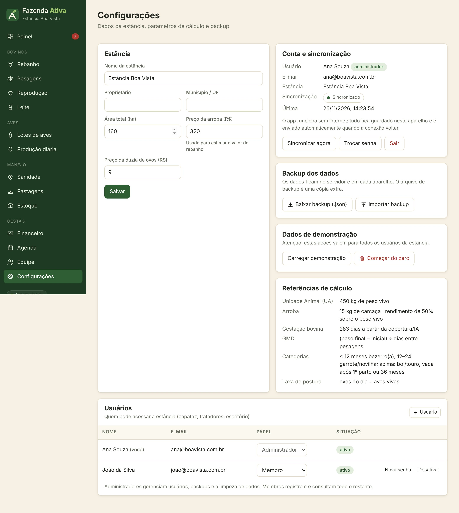
Todos os números automáticos usam as referências abaixo. Os valores fixos (450 kg por UA, rendimento de carcaça de 50%, 283 dias de gestação, 2 UA/ha de referência) podem ser ajustados no sistema se a realidade da estância for outra.
| Item | Regra |
|---|---|
| Idade | Meses completos desde o nascimento |
| Categoria (macho) | Menos de 12 meses: bezerro. De 12 a 24: garrote. Acima: touro (finalidade reprodução) ou boi |
| Categoria (fêmea) | Menos de 12 meses: bezerra. Depois: novilha, até o primeiro parto ou 36 meses, quando vira vaca |
| Peso atual | Última pesagem registrada |
| Parto previsto | Cobertura ou inseminação + 283 dias |
| Taxa de prenhez | Diagnósticos "prenhe" ÷ total de diagnósticos nos últimos 12 meses |
| Intervalo entre partos | Média de dias entre partos sucessivos da matriz |
O valor estimado do rebanho é a soma das arrobas × o preço da arroba definido em Configurações.
| Item | Regra |
|---|---|
| Aves vivas | Quantidade alojada − todas as mortes registradas |
| Idade | Idade no alojamento + dias desde o alojamento |
| Mortalidade acumulada | Mortes ÷ quantidade alojada |
| Taxa de postura | Ovos do dia ÷ aves vivas naquele dia, média dos últimos 7 registros |
| Ração por dúzia | Ração total (kg) ÷ (ovos ÷ 12) |
| Conversão alimentar | Lotes de corte: ração total (kg) ÷ (peso médio × aves vivas) |
| Alerta | Quando aparece |
|---|---|
| Próxima dose | 15 dias antes. Amarelo a 7 dias, vermelho quando vence |
| Parto previsto | 30 dias antes |
| Estoque | Saldo igual ou abaixo do mínimo. Vermelho quando zera |
| Mortalidade das aves | Mais de 2% do lote em 7 dias |
| Tarefas e contas | No dia do vencimento ou depois |
| Quando | O que lançar | Onde |
|---|---|---|
| Todo dia | Ovos, descarte, mortes e ração de cada lote | Aves › Produção diária |
| Todo dia | Litros da ordenha | Bovinos › Leite |
| Todo dia | Olhar alertas e tarefas | Painel |
| A cada manejo | Vacina, vermífugo ou remédio, com próxima dose e carência | Sanidade |
| A cada compra ou uso | Entrada ou saída de insumo | Estoque |
| Semanal | Peso médio de uma amostra dos frangos de corte | Ficha do lote › Registro diário |
| Mensal ou trimestral | Pesagem do gado no tronco | Bovinos › Pesagens › Pesagem em lote |
| Na estação de monta | Coberturas, inseminações e diagnósticos | Bovinos › Reprodução |
| Mensal | Conferir contas pendentes, lançar a folha e baixar um backup | Financeiro, Equipe, Configurações |